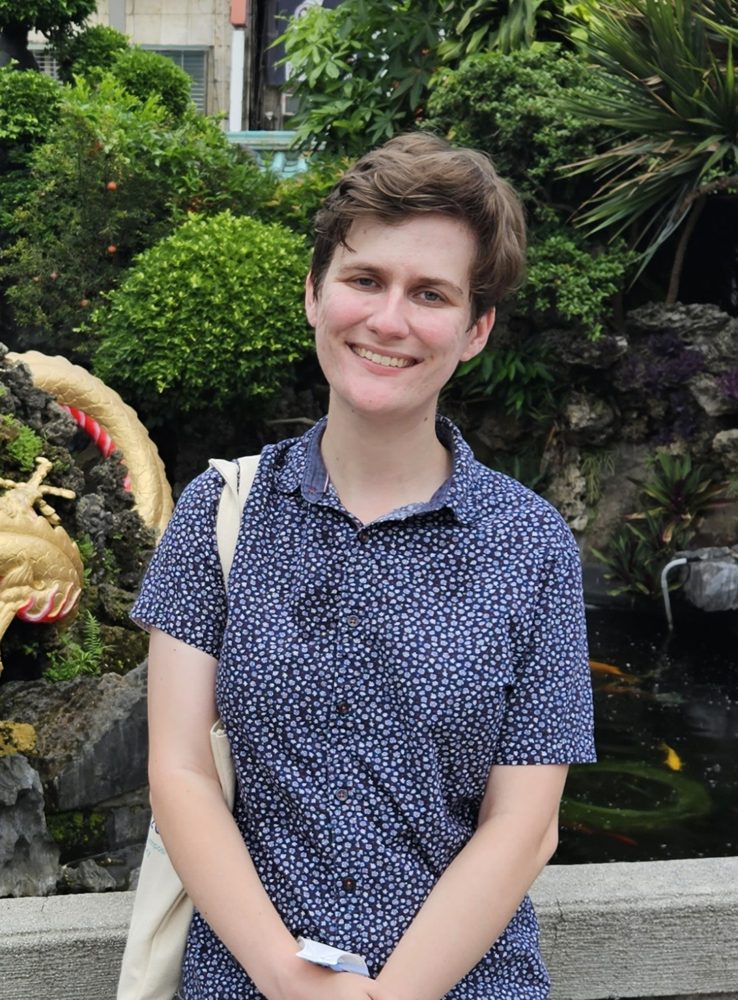

about me
I am an Affiliate Faculty member of the College of Computing at Grand Valley State University. I am also a Ph.D. candidate in Electrical and Computer Engineering at the University of Illinois at Urbana-Champaign, advised by Dr. Ilan Shomorony. I received my Bachelor's degree in Electrical Engineering with a focus in Communications Systems from the University of California, San Diego in 2019.
My research interests lie in the theory and design of algorithms for multiple sequence recovery, particularly with applications in metagenomics.
news
- I was awarded the E. A. Reid Fellowship.
- I presented my recent paper with Ilan Shomorony, "Fundamental Limits of Multiple Sequence Reconstruction from Substrings," at ISIT 2023.
- I have been selected as a 2023-2024 Mavis Future Faculty Fellow.
- I presented my recent paper with Ilan Shomorony and Reinhard Heckel, Achieving the Capacity of a DNA Storage Channel with Linear Coding Schemes, at CISS 2022.
- I received the 2021 ECE Alumni Service Award from UCSD.